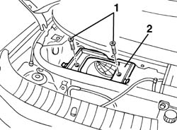

5010B08 ventilation system outside air purifying filter (antipollen) - r+r
- Path
- Procedures > 50 AUXILIARY UNITS > 5010 CLIMATE CONTROL - MISCELLANEOUS > 5010B heating/ventilation air pipes and ducts > 5010B08 ventilation system outside air purifying filter (antipollen) - r+r
- Kind
- repair procedure (removal / refitting; the operation number is the code)
- Applies to
- all engines; all production periods
- Interactive page
- https://sloeber94.github.io/elrnDB-a156/en/#/3238247
Applies to: all engines; production: fino a 03/98, da 04/98 a 02/99, da 03/99 a 01/00, da 02/00 a 01/01, da 02/01 a 02/02
 Removing
Removing
 Refitting
Refitting5050B34 windscreen wiper arm/s complete with blade - r+r (Right side)
5010B09 purifying filter (antipollen) filter element - replace
1. Unscrew the retaining bolts
2. Remove the filter container.

Applies to: all engines; production: fino a 03/98, da 04/98 a 02/99, da 03/99 a 01/00, da 02/00 a 01/01, da 02/01 a 02/02
Refitting
RemovingCheck that the filter container is not damaged.
Fit the filter container securing it using the bolts.
5010B09 purifying filter (antipollen) filter element - replace
5050B34 windscreen wiper arm/s complete with blade - r+r (Right side)